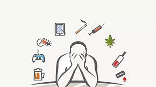
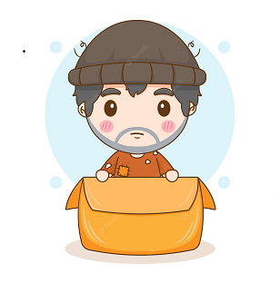
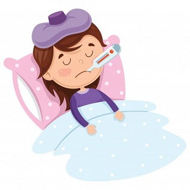

Nosotros Creemos:
Creemos que nada puede impedir que salgas de las adiciónes
Creemos que nada puede impedir que salgas de depresión

Creemos que nada puede impedir que salgas de la situación de calle
Creemos que nada puede impedir que te recuperes de aquella situación de salud en la que te encontras
